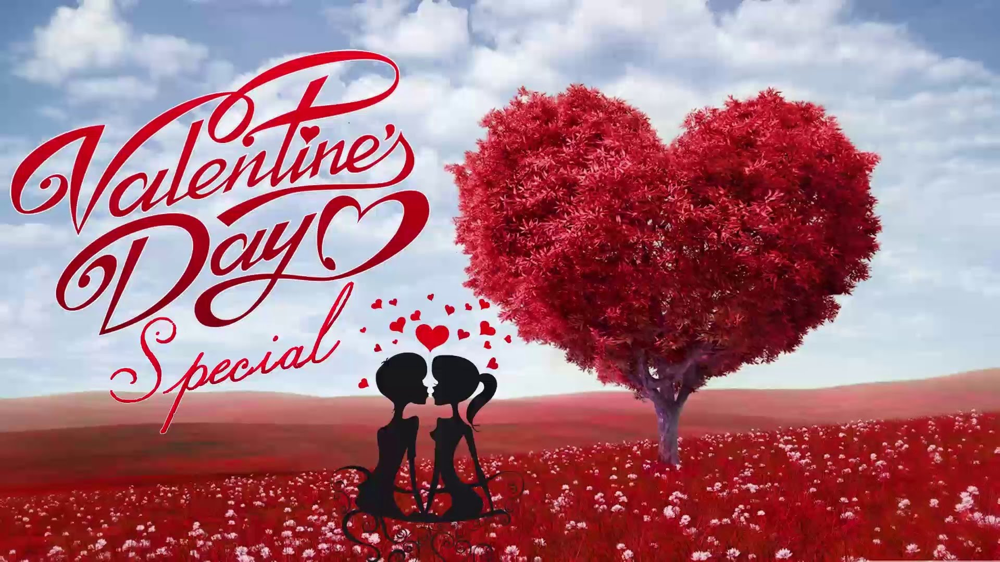

Valentine's Day is a holiday that happens on February 14.
This can be done by giving flowers, chocolates, Valentine's cards or just a nice gift.
Love notes can be given to one another.
In the third century A.D., Valentine was the bishop of Terni (Italy).
He performed weddings for couples who were not allowed to get married.
They may not have been allowed to get married because the parents did not agree with the connection or because the bridegroom was a soldier or a slave, so the marriage was forbidden. Valentine gave the married couple flowers from his garden. That's why flowers play a very important role on Valentine's Day.This did not please the emperor. On February 14, 269 AD, Valentine was beheaded because of his Christian faith.

A CARD. Millions and millions of cards are given or sent on Valentine’s Day and in the US, this the second occasion when such great numbers of cards are given, right after Christmas.
FLOWERS. Chiefly roses, particularly red ones, are sold during these days and it’s mostly men who buy them.
CHOCOLATES. Is there a better way than chocolate in a heart-shaped box to tell somebody they are your sweetheart?